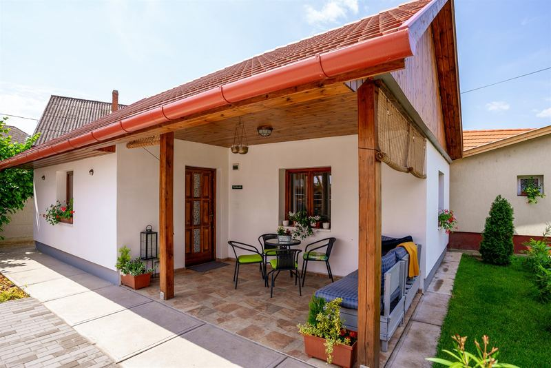
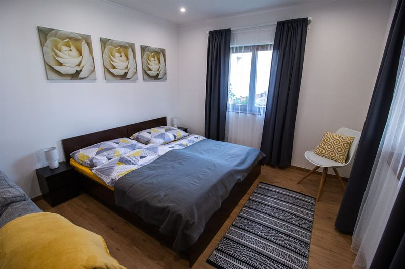
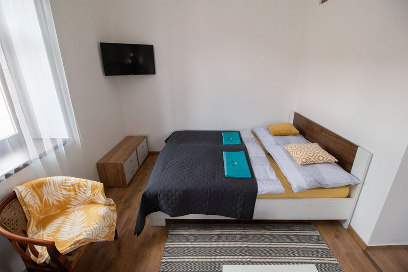
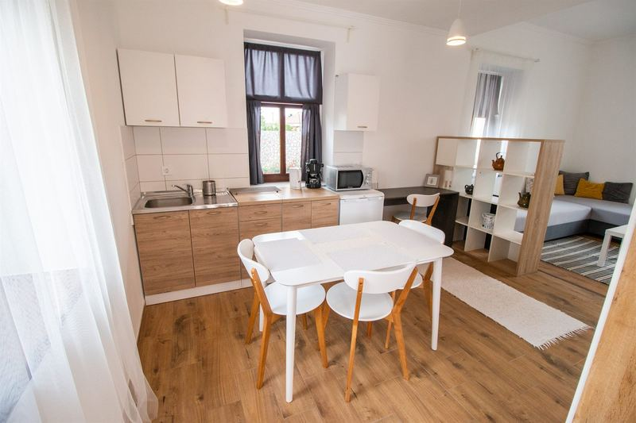
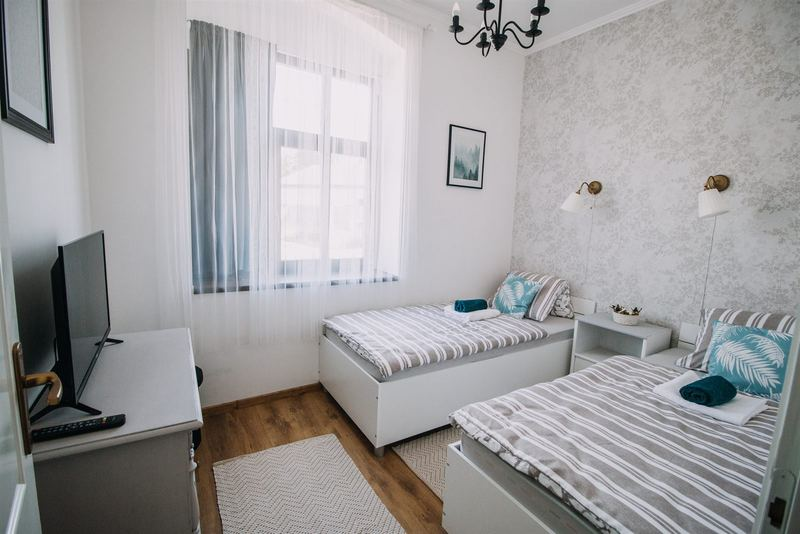
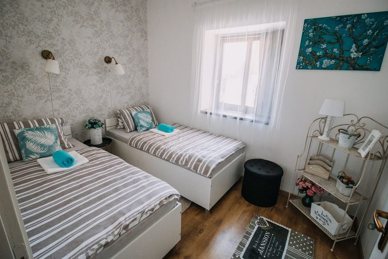
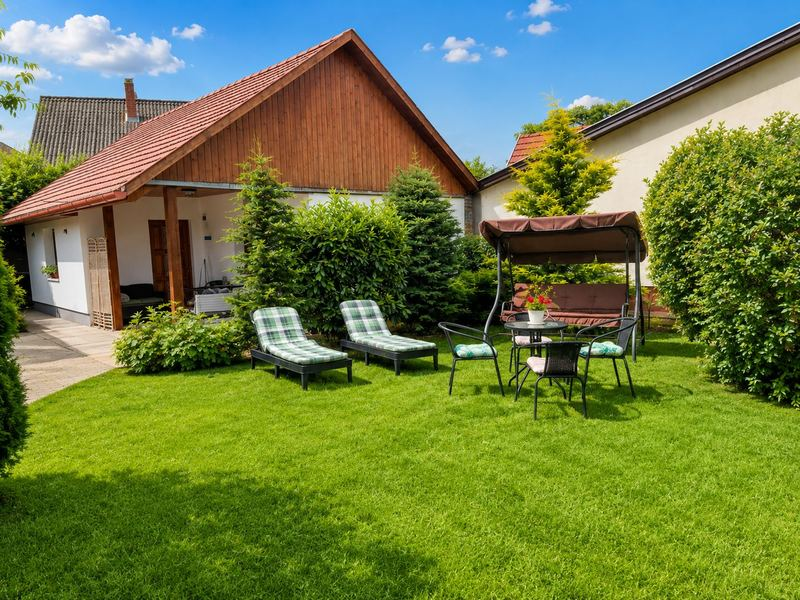
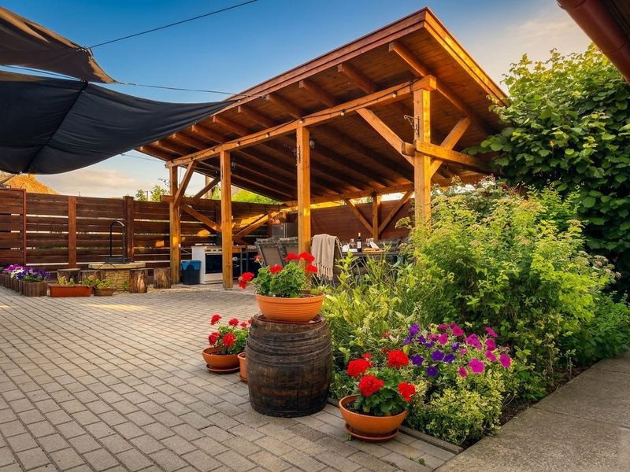

ApartmanokApartments
Három apartman, három karakter.Three apartments, three characters.
01 — Telihold
Önálló kisház, privát terasszal.A standalone cottage, with private terrace.
Önálló kisház privát bejárattal és saját terasszal, a porta csendes sarkában. Pároknak vagy maximum 4 fős családoknak ajánljuk.A standalone cottage with private entrance and its own terrace, in the quiet corner of the estate. Recommended for couples or families of up to four.
- Kialakítás privát bejárat, saját terasz.Layout private entrance, own terrace.
- Felszereltség légkondicionáló, TV, zuhanyzós fürdőszoba.Amenities air conditioning, TV, shower bathroom.
- Alvás franciaágy és kihúzható ülőgarnitúra.Sleeping double bed and a pull-out sofa.
- Konyha teljesen felszerelt: főzőlap, mikrohullámú sütő, kávéfőző, vízforraló, kenyérpirító, konyhai eszközök.Kitchen fully equipped: hob, microwave, coffee maker, kettle, toaster, kitchen utensils.






02 — Félhold
Önálló apartman a főépületben.A self-contained apartment in the main house.
A főépületben található, teljesen önálló apartman saját teraszrésszel. Pároknak és 4 fős családoknak ajánljuk.A fully self-contained apartment in the main building, with its own terrace area. Recommended for couples and families of four.
- Kialakítás teljesen önálló, saját teraszrész.Layout fully self-contained, own terrace area.
- Felszereltség légkondicionáló, TV, zuhanyzós fürdőszoba.Amenities air conditioning, TV, shower bathroom.
- Alvás franciaágy és 2 db különálló heverő.Sleeping double bed and two separate single beds.
- Konyha teljesen felszerelt: főzőlap, mikrohullámú sütő, kávéfőző, vízforraló, kenyérpirító, konyhai eszközök.Kitchen fully equipped: hob, microwave, coffee maker, kettle, toaster, kitchen utensils.
03 — Holdfény
Két hálószoba, tágas nappali.Two bedrooms, a spacious living room.
Két külön hálószoba és egy tágas, otthonos nappali. Családoknak és nagyobb baráti társaságoknak, 4–6 fő részére.Two separate bedrooms and a spacious, homely living room. For families and larger groups of friends, for four to six guests.
- Kialakítás két külön háló, tágas nappali.Layout two separate bedrooms, a spacious living room.
- Felszereltség légkondicionáló, TV, zuhanyzós fürdőszoba.Amenities air conditioning, TV, shower bathroom.
- Konyha saját, jól felszerelt: főzőlap, mikrohullámú sütő, kávéfőző, vízforraló, kenyérpirító, konyhai eszközök.Kitchen own, well-equipped: hob, microwave, coffee maker, kettle, toaster, kitchen utensils.
- Kapacitás 4–6 fő.Capacity 4–6 guests.






04 — Közös terekShared spaces
A kert és a terasz — mindenki számára.The garden and terrace — for everyone.
A vendégek számára tágas, gondozott kert, fedett terasz és pergola, közös társalgó, valamint grillező- és bográcsozóhely áll rendelkezésre. A pihenést napozóágyak és kerti zuhanyzó teszik teljessé.Guests share a spacious, tended garden, a covered terrace and pergola, a common lounge, and a grill and cauldron-cooking area. Sun loungers and a garden shower complete the rest.
- Kert, terasz fedett terasz, pergola, közös társalgó, napozóágyak.Garden, terrace covered terrace, pergola, shared lounge, sun loungers.
- Főzés a szabadban grillező- és bográcsozóhely, tűzifával és faszénnel.Outdoor cooking grill and cauldron spots, with firewood and charcoal.
- Parkolás ingyenes, kamerával figyelt (4 autó az utcafronton, 1 a zárt udvaron).Parking free and camera-monitored (4 cars at the front, 1 in the closed yard).
Megtalálta a megfelelő apartmant?Found the right apartment?
Írjon nekünk a foglalási részletekkel, és visszajelzünk.Send us your booking details and we'll get back to you.
AjánlatkérésEnquire